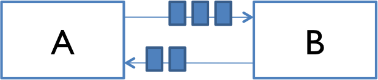

Reading 18: Message-Passing and Networking
Software in 6.102
Objectives
After reading the notes and examining the code for this class, you should be able to use message passing instead of shared memory for communication between TypeScript workers, and understand how client/server communication does message passing over the network.
Network communication is inherently concurrent, so building clients and servers will require us to reason about their concurrent behavior and to implement them with thread safety. We must also design the protocol that clients and servers use to communicate, just as we design the operations that clients of an ADT use to work with it.
Two models for concurrency
In our introduction to concurrency, we saw two models for concurrent programming: shared memory and message passing.


In the message passing model, concurrent modules interact by sending immutable messages to one another over a communication channel. That communication channel might connect different computers over a network, as in some of our initial examples: web browsing, instant messaging, etc.
The message passing model has several advantages over the shared memory model, which boil down to greater safety from bugs. In message-passing, concurrent modules interact explicitly, by passing messages through the communication channel, rather than implicitly through mutation of shared data. The implicit interaction of shared memory can too easily lead to inadvertent interaction, sharing and manipulating data in parts of the program that don’t know they’re concurrent and aren’t cooperating properly in the concurrency safety strategy. Message passing also shares only immutable objects (the messages) between modules, whereas shared memory requires sharing mutable objects, which even in non-concurrent programming can be a source of bugs.
We’ll discuss in this reading how to implement message passing in two contexts:
- between TypeScript workers, running in the same process
- between processes running on different machines, communicating over the network
For message passing between TypeScript workers, we’ll use a channel abstraction for sending and receiving messages, with a callback function to receive messages.
For message passing over the network, we’ll use clients and servers communicating by HTTP.
Message passing between workers
Let’s start by looking at message passing between TypeScript workers.
We’ll focus on the Node interface for Worker (found in the package worker_threads).
The web browser version of Worker (called Web Workers) differs slightly in detail, but the basic operations of message-passing exist in that context too.
When a worker is created, it comes with a two-way communication channel, the ends of which are called message ports.
One end of the channel is accessible to the code that created the worker, using the postMessage operation on the Worker object:
import { Worker } from 'worker_threads';
const worker = new Worker('./hello.js');
worker.postMessage('hello!'); // sends a message to the workerThe other end of the channel is accessible to the worker, as a global object parentPort from the worker_threads module:
// hello.ts
import { parentPort } from 'worker_threads';
parentPort.postMessage('bonjour!'); // sends a message back to parentThese examples are sending simple strings as messages, and neither side is actually receiving the message yet. Let’s address each of those problems in turn.
Message types
Message ports can in general carry a wide variety of types, including arrays, maps, sets, and record types. One important restriction, however, is that they cannot be instances of user-defined classes, because the method code will not be passed over the channel.
A common pattern is to use a record type to represent a message, such as this message (from this reading’s main code example) that represents the result of stocking or removing drinks from a refrigerator:
type FridgeResult = {
drinksTakenOrAdded: number,
drinksLeftInFridge: number
};When different kinds of messages might need to be sent over the channel, we can use a discriminated union to bring them together. A discriminated union is a union of object types that share a string or number literal that distinguishes among them. For example:
type DepositRequest = { name: 'deposit', amount: number };
type WithdrawRequest = { name: 'withdrawal', amount: number };
type BalanceRequest = { name: 'balance' };
type BankRequest = DepositRequest | WithdrawRequest | BalanceRequest;Here, the name field is a literal type that distinguishes between the three different kinds of requests we can make to the bank, and the rest of the fields of each object type might vary depending on the information needed for each kind of request.
Receiving messages
To receive incoming messages from a message port, we provide an event listener: a function that will be called whenever a message arrives. For example, here’s how the worker listens for a message from its parent:
import { parentPort } from 'worker_threads';
parentPort.on('message', (greeting: string) => {
console.log('received a message', greeting);
});When the parent calls worker.postMessage('hello!'), the worker would receive this message as a call to the anonymous function with greeting set to "hello!".
TypeScript message passing example
Here’s a message passing module that represents a refrigerator:
drinksfridge.ts
/**
* A mutable type representing a refrigerator containing drinks.
*/
class DrinksFridge {
private drinksInFridge: number = 0;
// Abstraction function:
// AF(drinksInFridge, port) = a refrigerator containing `drinksInFridge` drinks
// that takes requests from and sends replies to `port`
// Rep invariant:
// drinksInFridge >= 0
/**
* Make a DrinksFridge that will listen for requests and generate replies.
*
* @param port port to receive requests from and send replies to
*/
public constructor(
private readonly port: MessagePort
) {
this.checkRep();
}
...
}The fridge has a start method that starts listening for incoming messages, and forwards them to a handler method:
drinksfridge.ts
/** Start handling drink requests. */
public start(): void {
this.port.on('message', (n: number) => {
const reply: FridgeResult = this.handleDrinkRequest(n);
this.port.postMessage(reply);
});
}Incoming messages are integers representing a number of drinks to take from the fridge (if the integer is positive) or load into the fridge (if it is negative):
drinksfridge.ts
/** @param n number of drinks requested from the fridge (if >0), or to load into the fridge (if <0) */
private handleDrinkRequest(n: number): FridgeResult {
const change = Math.min(n, this.drinksInFridge);
this.drinksInFridge -= change;
this.checkRep();
return { drinksTakenOrAdded: change, drinksLeftInFridge: this.drinksInFridge };
}Outgoing messages are instances of FridgeResult, a simple record type:
drinksfridge.ts
/** Record type for DrinksFridge's reply messages. */
type FridgeResult = {
drinksTakenOrAdded: number, // number of drinks removed from fridge (if >0) or added to fridge (if <0)
drinksLeftInFridge: number
};Some code to load and use the fridge is in loadfridge.ts.
Stopping
What if we want to shut down the DrinksFridge so it is no longer waiting for new inputs?
One strategy is a poison pill: a special message that signals the consumer of that message to end its work.
To shut down the fridge, since its input messages are merely integers, we would have to choose a magic poison integer (maybe nobody will ever ask for 0 drinks…? bad idea, don’t use magic numbers) or use null (bad idea, don’t use null). Instead, we might change the type of input messages to a discriminated union:
type FridgeRequest = DrinkRequest | StopRequest;
type DrinkRequest = { name: 'drink', drinksRequested: number };
type StopRequest = { name: 'stop' };When we want to stop the fridge, we send a StopRequest, i.e. fridge.postMessage({ name:'stop' }).
And when the DrinksFridge receives this stop message, it will need to stop listening for incoming messages.
That requires us to keep track of the listener callback so it can be removed later.
For example, fill in the blanks in DrinksFridge in the exercise below:
class DrinksFridge {
...
// callback function is now stored as a private field
private readonly messageCallback = (req: FridgeRequest) => {
// see if we should stop
if (req.name === 'stop') {
// TypeScript infers that req must be a StopRequest here
this.stop();
▶▶A◀◀;
}
// with the correct code in blank A,
// TypeScript infers that req must be a DrinkRequest here
// compute the answer and send it back
const n = ▶▶B◀◀;
const reply:FridgeResult = this.handleDrinkRequest(n);
this.port.postMessage(reply);
};
/** Start handling drink requests. */
public start(): void {
this.port.on('message', this.messageCallback);
}
private stop(): void {
this.port.removeListener('message', ▶▶C◀◀);
// note that once this thread has no more code to run, and no more
// listeners attached, it terminates
}
...
}(If you’re surprised that the messageCallback arrow function can reference this, good eye!
Remember that arrow functions do not define their own this.
Instead, this will be looked up in the surrounding scope.
It turns out that field value expressions in a TypeScript class body are evaluated in the constructor, which is why this is defined as we need it.)
It is also possible to stop a Worker by calling its terminate() method.
But this method summarily ends execution in that Worker, dropping whatever unfinished work it had on the floor, and potentially leaving shared state in the filesystem, or database, or communication channels broken for the rest of the program.
Using the message passing channel to shut down cleanly is the way to go.
Race conditions
In a previous reading, we saw in the bank account example that message-passing doesn’t eliminate the possibility of race conditions. It’s still possible for concurrent message-passing processes to interleave their work in bad ways.
This particularly happens when a client must send multiple messages to the module to do what it needs, because those messages (and the client’s processing of their responses) may interleave with messages sent by other clients.
The message protocol for DrinksFridge has been carefully designed to manage some of this interleaving, but there are still situations where a race condition can arise.
The next exercises explore this problem.
reading exercises
Suppose the DrinksFridge has only 2 drinks left, and two very thirsty people send it requests, each asking for 3 drinks.
Which of these outcomes is possible, after both messages have been processed by the fridge?
You can reread the code for start() and handleDrinkRequest() to remind yourself how the fridge works.
(missing explanation)
Suppose the DrinksFridge still has only 2 drinks left, and three people would each like a drink.
But they are all more polite than they are thirsty – none of them wants to take the last drink and leave the fridge empty.
So all three people run an algorithm that might be characterized as “LOOK before you TAKE”:
- LOOK: request 0 drinks, just to see how many drinks are left in the fridge without taking any
- if the response shows the fridge has more than 1 drink left, then:
- TAKE: request 1 drink from the fridge
- otherwise go away without a drink
Which of these outcomes is possible, after all three people run their LOOK-TAKE algorithm and all their messages have been processed by the fridge?
(missing explanation)
Client/server design pattern
Now let’s turn our attention to another important kind of message passing: the client/server design pattern for network communication with message passing.
In this pattern there are two kinds of processes: clients and servers. A client initiates the communication by connecting to a server. The client sends requests to the server, and the server sends replies back. Finally, the client disconnects. A server might handle connections from many clients concurrently, and clients might also connect to multiple servers.
Many Internet applications work this way: web browsers are clients for web servers, an email program like Outlook is a client for a mail server, etc.
On the Internet, client and server processes are often running on different machines, connected only by the network, but it doesn’t have to be that way — the server can be a process running on the same machine as the client.
Networking basics
We begin with some important concepts related to network communication.
IP addresses
A network interface is identified by an IP address. IP version 4 addresses are 32-bit numbers written in four 8-bit parts. For example (as of this writing):
104.47.42.36is the address of a Microsoft Outlook email handler.127.0.0.1is the loopback or localhost address: it always refers to the local machine. Technically, any address whose first octet is127is a loopback address, but127.0.0.1is standard.
You can ask Google for your current IP address. In general, as you carry around your laptop, every time you connect your machine to the network it can be assigned a new IP address.
Hostnames
Hostnames are names that can be translated into IP addresses. A single hostname can map to different IP addresses at different times; and multiple hostnames can map to the same IP address. For example:
web.mit.eduis the name for MIT’s web server. You can translate this name to an IP address yourself usingdig,host, ornslookupon the command line, e.g.:$ dig +short web.mit.edu 18.9.22.69
google.comis the name for Google. Try using one of the commands above to findgoogle.com’s IP address. What do you see?mit-edu.mail.protection.outlook.comis the name for MIT’s incoming email handler, a spam filtering system hosted by Microsoft.localhostis a name for127.0.0.1. When you want to talk to a server running on your own machine, talk tolocalhost.
Translation from hostnames to IP addresses is the job of the Domain Name System (DNS). It’s super cool, but not part of our discussion today.
Port numbers
A single machine might have multiple server applications that clients wish to connect to, so we need a way to direct traffic on the same network interface to different processes.
Network interfaces have multiple ports identified by a 16-bit number. Port 0 is reserved, so port numbers effectively run from 1 to 65535 (which is 216 - 1, the maximum 16-bit number).
When a server process binds to a particular port, it is now listening on that port. A port can have only one listener at a time, so if some other server process tries to listen to the same port, it will fail.
Clients have to know which port number the server is listening on. There are some well-known ports that are reserved for system-level processes and provide standard ports for certain services. For example:
- Port 22 is the standard SSH port.
When you connect to
athena.dialup.mit.eduusing SSH, the software automatically uses port 22. - Port 25 is the standard email server port.
- Port 80 is the standard web server port.
When you connect to the URL
http://web.mit.eduin your web browser, it connects to18.9.22.69on port 80. - Port 443 is the standard secure web server port, when you use https instead of http.
When you connect to
https://web.mit.edu, it connects on port 443 instead.
When the port is not a standard port, it is specified as part of the address.
For example, the URL http://128.2.39.10:9000 refers to port 9000 on the machine at 128.2.39.10.
* see What if Dr. Seuss Did Technical Writing?, although the issue described in the first stanza is no longer relevant with the obsolescence of floppy disk drives
Web APIs
When a web client and web server make a network connection, what do they pass back and forth over that connection? Unlike the in-memory objects sent between workers using message ports, network connections send and receive requests and replies as low-level sequences of bytes. Instead of choosing or designing an abstract data type for messages, we will choose or design a web API (application programming interface).
Hypertext Transfer Protocol (HTTP) is the language of the World Wide Web.
We already know that port 80 is the well-known port for speaking HTTP to web servers, so let’s talk to some servers on the command line, using the curl program. (curl is likely to be already on your machine; it is included by default with Windows and MacOS and most Linux distributions.)
A typical web server (designed for human browsing) returns HTML:
$ curl -L http://info.cern.ch/ <html><head></head><body><header> <title>http://info.cern.ch</title> </header> <h1>http://info.cern.ch - home of the first website</h1> <p>From here you can:</p> <ul> <li><a href="http://info.cern.ch/hypertext/WWW/TheProject.html">Browse the first website</a></li> <li><a href="http://line-mode.cern.ch/www/hypertext/WWW/TheProject.html">Browse the first website using the line-mode browser simulator</a></li> <li><a href="http://home.web.cern.ch/topics/birth-web">Learn about the birth of the web</a></li> <li><a href="http://home.web.cern.ch/about">Learn about CERN, the physics laboratory where the web was born</a></li> </ul> </body></html>
A web API returns something more low-level. Here is an API that returns a random quote from Stranger Things each time you call it:
$ curl -L https://strangerthings-quotes.vercel.app/api/quotes [{"quote":"It's called code shut-your-mouth.","author":"Erica Sinclair"}]
And here is the Cambridge weather forecast from the US National Weather Service:
$ curl -L https://api.weather.gov/gridpoints/BOX/69,75/forecast { ... first section omitted ... "properties": { "updated": "2021-11-05T22:53:57+00:00", "units": "us", "forecastGenerator": "BaselineForecastGenerator", "generatedAt": "2021-11-05T23:05:50+00:00", "updateTime": "2021-11-05T22:53:57+00:00", "validTimes": "2021-11-05T16:00:00+00:00/P8DT6H", "elevation": { "unitCode": "wmoUnit:m", "value": 3.9624000000000001 }, "periods": [ { "number": 1, "name": "Tonight", "startTime": "2021-11-05T19:00:00-04:00", "endTime": "2021-11-06T06:00:00-04:00", "isDaytime": false, "temperature": 33, "temperatureUnit": "F", "temperatureTrend": null, "windSpeed": "2 mph", "windDirection": "NW", "icon": "https://api.weather.gov/icons/land/night/skc?size=medium", "shortForecast": "Clear", "detailedForecast": "Clear, with a low around 33. Northwest wind around 2 mph." }, ... lots more output ... }
Both the Stranger Things quote and the weather-report are formatted as JavaScript Object Notation (JSON), a constrained form of JavaScript syntax that can express strings, numbers, arrays, and object literals (dictionaries), which has become the most common way to exchange structured data through web APIs.
Modern web browsers can also display JSON in a helpful format, so you can go to https://api.weather.gov/gridpoints/BOX/69,75/forecast in your browser and browse through the structured data that it returns.
Routes
A web server typically divides up the website it serves into sections, called routes.
For example, the server for web.mit.edu might have routes for:
/education(accessible by the URLhttp://web.mit.edu/education)/research/campus-life
In a web API, the route often defines the function name of the request. For example, the US National Weather Service API defines routes for:
Parameters
To think about calling a web API like a function, we need to understand how to pass parameters to it, and how to get results back.
There are three ways to provide parameters.
Path components. The path of the URL consists of /-separated components. In addition to specifying the function name, the remaining components may be additional parameters, for example:
https://api.weather.gov/points/42.3541,-71.1104provides a latitude,longitude pair as a path componenthttps://api.weather.gov/gridpoints/BOX/69,75/forecasthas three path component parameters: the forecast office identifierBOX, the grid location for that office69,75, and the type of information desired,forecast.
Query parameters. After the path of a URL comes an optional query, which starts with ? and consists of name=value pairs separated by &. You may have already seen this in your web browsing, because it is commonly used by web forms. For example:
https://www.google.com/search?q=MIThas a query parameterqwith valueMIT.https://api.weather.gov/alerts/active?area=MA&severity=Minorhas two query parameters:areawith valueMA, andseveritywith valueMinor.
Body parameters. These parameters do not appear in the URL. Some HTTP requests can have a body, which is an arbitrary sequence of additional bytes. The format of the body can vary:
- plain text
- a blob of binary data, perhaps loaded from a file
- form data, which is a set of name-value pairs similar to query parameters
- JSON
Body parameters are less common than path or query parameters. HTTP requests come in two common flavors, only one of which is allowed to have a body:
GETrequests are the normal requests thatcurlmakes, and that your web browser makes when you type a URL into the address bar or click on an ordinary hyperlink.GETrequests have a URL but no body, so they can only have path and query parameters.GETis designed for observer operations that do not mutate any state on the server. A web client can be confident that repeated issues ofGETwill not mutate or create anything new, so if a browser needs to reissue aGETrequest in order to reload a page, it can do that safely. In other words,GETshould be idempotent.POSTrequests have both a URL and a body. You can’t issue aPOSTrequest from your web browser’s address bar, butcurlcan do it, and web forms often usePOSTas well.POSTis intended for operations that change or create data on the server: mutators, producers, creators. Web clients are much more careful about reissuingPOSTrequests. During your web browsing, you may at some point have seen a confirmation dialog box asking if you really want to resend a form – that’s because the browser is not sure whether it’s safe to make thePOSTtwice, and potentially buy a second set of expensive airline tickets, for example.
HTTP has a few other kinds of requests as well, including PUT and DELETE, but these are rarely used in web APIs. The kind of HTTP request is called its method, rather confusingly, because it has little to do with the idea of methods of an object. The HTTP request method is more like our classification of operations on an ADT, since GET was originally intended for observers, and POST for creators and mutators.
Results
An HTTP request from a client is normally followed by an HTTP response from the server, which includes two ways to provide results:
Status code. Every HTTP response has a three-digit status code, indicating whether it succeeded or not. Here are some common status codes:
- 200 OK for a request that completed successfully
- 404 Not Found for a web API or web page that does not exist
- 400 Bad Request typically used when the parameters to the request were bad for some reason
- 500 Internal Server Error when the request fails for some other reason
- 412 Precondition Failed when conditions in a conditional request aren’t fulfilled (6.102 in the wild!)
- 418 I’m a teapot when the server refuses to brew coffee because it is, permanently, a teapot
You can also see the HTTP status codes acted out by cats.
Reply body. Like a request, a reply can also have a body of data attached to it, of arbitrary type. Typical body types are:
- HTML (normally used in web servers designed for human browsing, rather than web APIs)
- plain text
- JSON
Text is good for simple results that are readily parsable (such as a comma-separated pair of numbers, perhaps). For complex results, however, JSON has become the preferred result type. We saw above what JSON results look like when we queried the National Weather Service for Cambridge weather.
Specifying a web API
Specifying how parameters are passed and results are returned is not enough: it fills a similar role to method signatures when defining an ADT. We still need the rest of the spec:
What are the preconditions of a request? For example, if a particular parameter of a request is a string of digits, is any number valid? Or must it be the ID number of a record known to the server?
What are the postconditions? What action will the server take based on a request? What server-side data will be mutated? What reply will the server send back to the client?
Web server in TypeScript
Let’s look at the nuts and bolts of writing a simple web server in TypeScript. For the sake of introduction, we’ll look at a simple server that just echoes what the client sends it.
You can see the full code for this web server. Some of the code snippets in this reading are simplified for presentation purposes.
Route handling
The control flow of a web server is an input loop waiting for incoming connections from web browsers.
When a new connection arrives, the server reads and parses the request.
The request is then routed to the handler registered for the route matching the request.
Typically only a prefix of the request has to match the route, so the request http://web.mit.edu/community/topic/arts.html will be routed to the handler for /community unless there is a more specific (longer prefix) route registered.
The handler is then responsible for constructing the response to the request.
The most popular router for Node is Express.
You can create a new Express Application object like this:
import express, { Request, Response } from 'express';
const app = express();Note that express is a factory function that returns Application objects.
Sometimes complex servers have more than one Application, but most need only one.
You can make the application start listening for HTTP connections:
const PORT = 8000; // port on which the server will listen for incoming connections
app.listen(PORT);and then add routes to the application using get():
app.get('/echo', (request: Request, response: Response) => {
...
});Here, get refers to the GET method of the HTTP protocol, as described above.
When you type a URL into a web browser’s address bar, you are telling the browser to issue a GET request.
The first argument is the route prefix, and the second argument is a callback function.
The app object will call the callback function anytime an incoming request starts with the /echo prefix.
The arguments to the callback are a Request object that provides observer methods giving information about the request, and a Response object with mutator methods for generating a response that goes back to the web browser.
The body of the callback function (shown as ... above) should examine the request and generate a response.
As an example of how it might examine the request, if the incoming request was http://localhost:8000/echo?greeting=hello, then:
const greeting = request.query['greeting'];returns "hello", which came from the query part of the URL (the part starting with a question mark, ?greeting=hello).
As an example of generating a response, the handler should first provide a status code (typically 200 OK when the request is successful), and the type of response it is returning (HTML, plain text, JSON, or something else):
response.status(StatusCodes.OK); // using http-status-codes library
response.type('text');And then write the response using the send method:
response.send(`${greeting} to you too!`);The response is now complete, and the web browser should display the text passed to send.
These mutator operations (status, type, and send) are declared to return the Response object itself rather than just void, so it is common to see them chained together like this:
response.status(StatusCodes.OK).type('text').send(`${greeting} to you too!`);response
.status(StatusCodes.OK)
.type('text')
.send(`${greeting} to you too!`);This kind of function-calling syntax – where the return value of a method is immediately used to call another method – is called method call chaining. You can do the same thing with functions like map, filter, reduce!
Here is the full code for the /echo route:
app.get('/echo', (request: Request, response: Response) => {
const greeting = request.query['greeting'];
response
.status(StatusCodes.OK)
.type('text')
.send(`${greeting} to you too!`);
});Once again, this lambda function is an example of a listener callback: a piece of code that we as clients are handing to the Application object, for it to call whenever an event occurs, in this case the arrival of a request matching the route.
reading exercises
const app = express();
const PORT = 8000;
app.listen(PORT).on('listening', () => console.log(`now listening at http://localhost:${PORT}`));
app.get('/echo', (request: Request, response: Response) => {
const greeting = request.query['greeting'];
response
.status(StatusCodes.OK)
.type('text')
.send(`${greeting} to you too!`);
});Put the following items in order according to when they would happen during the setup and execution of this server.
express() creates and returns the Application object
the server prints now listening at http://localhost:8000
the Application object is ready to receive HTTP requests at port 8000
a client successfully opens a connection to http://localhost:8000/echo?greeting=hi
a response is received by the client
a callback is attached to the listening event on the Application object
a callback is attached to the /echo route
the /echo route callback is called
(missing explanation)
Query parameters vs. route parameters
As we saw above, there are several ways to pass parameters to a web API. In our example so far, greeting is a query parameter:
app.get('/echo', (request: Request, response: Response) => {
const greeting = request.query['greeting'];
...
.send(`${greeting} to you too!`);
})When this server receives a client request for http://localhost:8000/echo/Ben?greeting=Gday, it results in the response:
Gday to you too!Let’s extend the example to include a path parameter (also called a route parameter), which is done by putting the parameter name at the appropriate place in the route preceded by :.
app.get('/echo/:person', (request: Request, response: Response) => {
const person = request.params['person']; // <-- careful! route parameters are in request.params,
const greeting = request.query['greeting']; // <-- but query parameters are in request.query
...
.send(`${greeting} to you too, ${person}!`);
})When this server receives a client request for http://localhost:8000/echo/Ben?greeting=hi, then "Ben" is bound to the route parameter person, and "hi" is bound to the query parameter greeting, resulting in the response:
hi to you too, Ben!A web API can have any number of query parameters or route parameters. Route parameters must appear in a particular order in the path (much like function arguments in Python and TypeScript), while query parameters can be provided in any order but must include the parameter name (much like keyword arguments in Python).
Clients
Since the Specifications reading, we’ve used the term client to refer to code that uses a class. In this reading, we started using client to mean one party in a network client/server communication. With Express, we need to keep track of both specific meanings of client:
A client of the web server is a web browser, sending it requests over the network. For example, a client of our Echo web server sends an HTTP request to
GET /echo?greeting=helloA client of the Express
Applicationobject is code we’ve written against the API that it provides. For example, a client ofApplicationcallsget()and passes in a callback function that is ready to handle requests for the/echoroute.
Error handling
Although the full topic of error handling in Express is outside the scope of this course, fortunately the simplest kind of error handling is easy: throwing an exception in the callback function will send an error back to the browser showing the stack trace. For example:
app.get('/bad', (request: Request, response: Response) => {
throw new Error('always fails');
});displays something like this when a web browser visits http://localhost:8000/bad:
Error: always fails
at ./server.ts:30:11
at Layer.handle [as handle_request] (./node_modules/express/lib/router/layer.js:95:5)
at next (./node_modules/express/lib/router/route.js:137:13)
at Route.dispatch (./node_modules/express/lib/router/route.js:112:3)
at Layer.handle [as handle_request] (./node_modules/express/lib/router/layer.js:95:5)
at ./node_modules/express/lib/router/index.js:281:22
at Function.process_params (./node_modules/express/lib/router/index.js:335:12)
at next (./node_modules/express/lib/router/index.js:275:10)
at expressInit (./node_modules/express/lib/middleware/init.js:40:5)
at Layer.handle [as handle_request] (./node_modules/express/lib/router/layer.js:95:5)Displaying a stack trace to the user wouldn’t be appropriate for a production web server, but it’s a good way to get started.
Using await in a callback
A web server often has to do some work in response to a web request: reading files from the filesystem, making queries to a database, writing data somewhere.
If that work involves calling asynchronous functions, then we may need to use await in the callback function, which means in turn that the callback function must itself be defined with the async keyword:
app.get('/lookup', async (request: Request, response: Response) => {
...
const data = await database.lookup(query);
...
});Summary
Message passing systems avoid the bugs associated with synchronizing actions on shared mutable data by instead sharing a communication channel, e.g. a stream or a queue. Rather than develop a mutable ADT that is safe for use concurrently, as we did in the Mutual Exclusion reading, concurrent modules (threads, processes, separate machines) only transfer (immutable) messages back and forth, and mutation is confined within each module individually.
In the client/server design pattern, concurrency is inevitable: multiple clients and multiple servers are connected on the network, sending and receiving messages simultaneously, and expecting timely replies. A server that blocks waiting for one slow client when there are other clients waiting to connect to it or to receive replies will not make those clients happy.
All the challenges of making concurrent code safe from bugs, easy to understand, and ready for change apply when we design network clients and servers. These processes run concurrently with one another (often on different machines), and any server that wants to talk to multiple clients concurrently (or a client that wants to talk to multiple servers) must manage that concurrency.